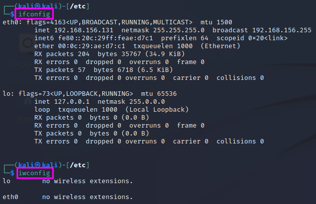
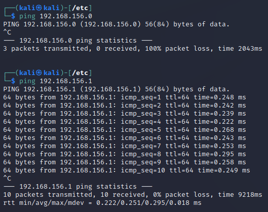

Introduction to Linux
The following notes are based on TCM Security’s ‘Practical Ethical Hacking’. They refer to the Kali Linux operating system.
Exploring Kali Linux
Kali Linux is a Linux distribution specifically put together for ethical hacking. It is based on Debian. The structure of the installed hacking tools is ordered in the way a penetration test is typically conducted from information gathering at the beginning to report writing at the end.
Sudo Overview
In earlier versions of Kali, there was an administrator account called “root”, which had all privileges, which again posed some security risks. Now a user named “kali” with limited access rights is provided by default, which must use a command called “sudo” (short for “super used do”) to elevate the user rights temporarily to execute a specific command.
Example: cat /etc/shadow will not work with normal access rights. Instead, sudo cat /etc/shadow works, but has to be member of a sudo’ers group and enter one’s password.
{kind=link}
sudo su will permanently switch user (su) to root, but this is not best security praxis and therefore not recommended for general work. One should use sudo instead and just change to root if the situation requires. If one opens a new tab from a terminal window with root, the user of the new tab will be kali again.
{kind=link}
Users and Privileges
An ls -la command shows the access rights to files and subfolders in the leftmost column of the command’s output:

The leftmost character (‘d’ or ‘-‘) tells us if the respective item is a directory (‘d’) or a file (‘-‘). The following 9 characters indicate the right to read (‘r’), write (‘w’) or execute (‘x’) the respective file for the owner of the file, the owner’s group and any other user. For penetration test, the /tmp folder is oftentimes used to upload exploits since the tmp folder gives full access rights to every user. A pentester will also look for other files with insecure configurations that may offer a route to gain higher access rights.
{kind=link}
To change access rights, the chmod command is used, followed by ‘u’ for user, ‘g’ for group or ‘o’ for others and a ‘+’ or ‘-‘ and the permissions (‘r’, ‘w’, ‘x’) that shell be set or revoked.
Example: chmod u+x <filename> makes the file executable. It is also possible to modify several settings at a time, e.g. with chmod ug+rw, o-x <filename>
Users can be added using the sudo adduser <name> command.

When the user has been created, it will show up at the end of the /etc/passwd file. This file used to include the passwords (or hashes of the same), but that is not the case any more. A pentester can use access to this file to learn which users are present on the respective system, e.g. to use them to hack into SSH with their user name.
The password hashes are stored in the file /etc/shadow, which has restricted access rights. If one can get access to the password hashes, it might be possible to crack the password with suitable tools, e.g. hashcat.

One can switch to another user account with the su (switch user) command, e.g. su john. If a user other than root shall be able to change permissions, that user has to be in the sudo’ers group (or file, respectively). sudo <command> will execute the respective command with root access rights.
Common Network Commands
The configurations of the installed network interface cards (NIC) and wireless network adapters can be displayed with the ifconfig and iwconfig commands. The ifconfig command is Linux’ version of Windows’ ipconfig command.
The ping <IP address> command is used to try if a connection to a certain IP address can be established. If the connection cannot be established for some reason, the attempt will time out after some time, and an error message will be displayed. If the sought IP address exists, the connection is not broken and the machine with the sought IP does not block ping (ICMP) traffic, a report with the return time will be displayed for each package:
The ping command runs indefinitely, one has to stop it hitting <Ctrl> + <C>. When it is stopped, it will display some statistical information.
The arp -a command shows a list of the stored IP connections, i.e. a table relating IP addresses (layer 3) with MAC addresses (layer 2). ARP stands for Address Resolution Protocol.
Open sockets on the machine can be displayed with netstat -ano.
The system’s IP routing table can be displayed with the route command.
UPDATE: The commands above are becoming deprecated. Instead of ifconfig, arp and route, the new ip command can be used. ip a shows the network adapter settings (replacing ifconfig), ip n (n for neighbours) shows the ARP table (replacing arp), and ip r (r for routes) shows the routing table (replacing route).
Installing and Updating Tools
To update Kali Linux, use sudo apt update to update the database with the latest released software package for the used distribution, followed by sudo apt upgrade to actually download and install the packages that are not up to date. Note that the latter step might easily take a while! Linux will display the additional amount of harddisk space needed and ask if the updates shall be carried out. After the update is finished, sudo apt autoremove can be used to remove packages that are no longer used to free disk space again.
When you want to install new software packages from Github, it is good practice to install them in the /opt folder:
- cd /opt
- git clone <link to git>
- Follow the installation instructions on the github page.
Viewing, Creating and Editing Files
echo <string> prints the string to the terminal window. The output can be redirected into a file with echo <string> > <filename>. This will create the file or overwrite it if it already exists. If the text shall be appended to an already existing file, one has to use echo <string> >> <filename> instead of the single > symbol.
The contents of a text file can be printed to the terminal with the command cat <filename>.
Another way to create a file – but one without any content – is the command touch <filename>, which creates an empty file if the file did not exist yet. If it already existed, the touch command will update the “last modified” entry to the current system time.
Command line text editors include nano and vi/vim.